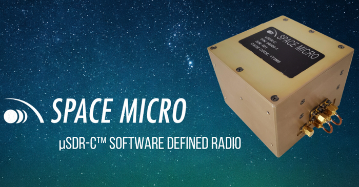
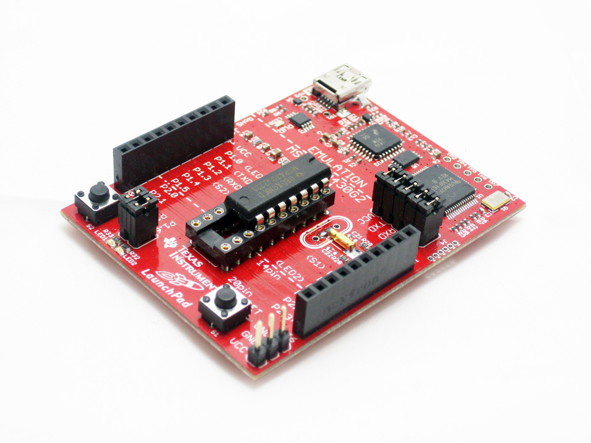
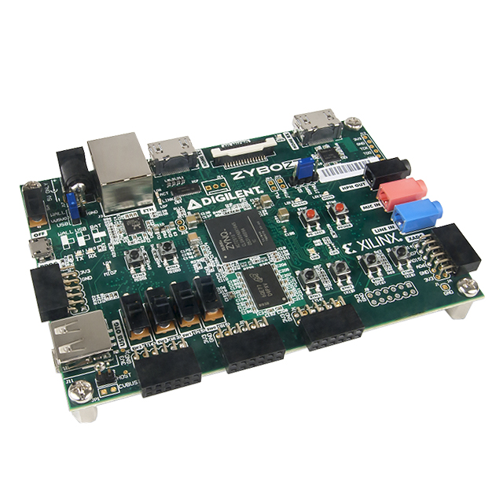
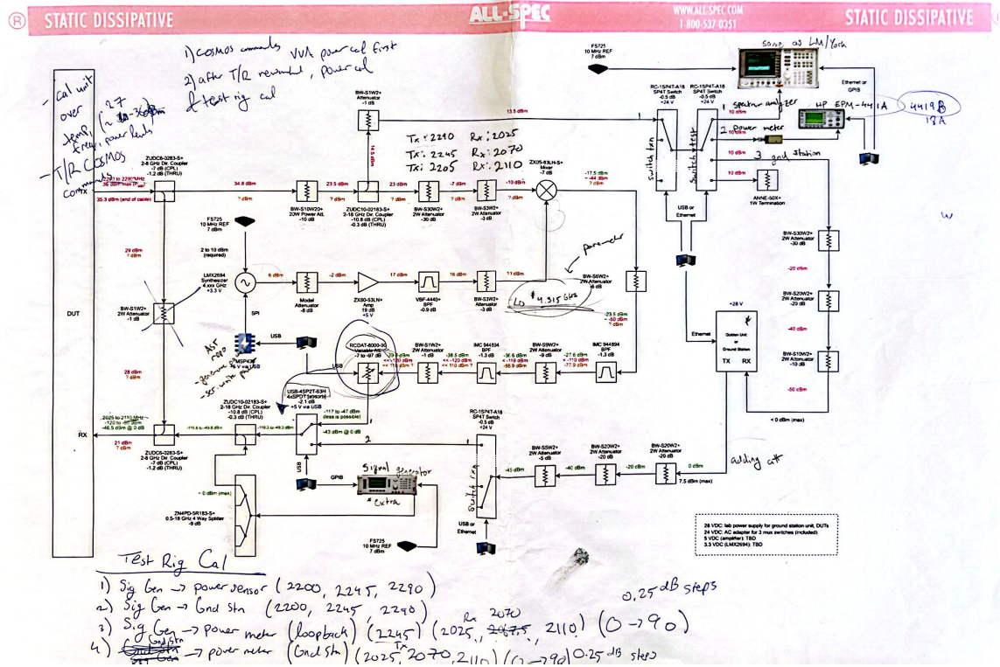

Modular Nanocom Software Defined Radios (SDRs)
From hardware design to orbital deployment · Voyager Technologies (Space Micro Inc.)
Engineered and tested flight-ready software-defined radios at Voyager Technologies (formerly Space Micro Inc.), contributing to modular architectures that secured over $10 million in new defense and commercial space contracts.

Modular Nanocom Software Defined Radio (SDR) hardware developed for small satellite architectures.
Mission Deployment in Action
Watch the Falcon 9 launch carrying SDA Tranche 0 constellation satellites equipped with high-performance flight payloads.

Source: SpaceX broadcast of the Space Development Agency (SDA) Tranche 0 Mission.
Firmware & Embedded Architecture
TI MSP430 Software Driver Development
Developed robust software drivers for the TI MSP430 microcontroller family to manage critical housekeeping, power management states, and subsystem telemetry. Utilized low-level communication protocols including UART and Spy-Bi-Wire (SBW) for in-system programming and debugging.


Xilinx Zynq FPGA HDL Firmware
Authored high-level HDL firmware for Xilinx Zynq system-on-chip architectures. Implemented real-time digital signal processing blocks, high-speed data routing pipelines, and low-level Linux kernel driver integration written in C via JTAG debugging interfaces.
Automated Physical Testing & Test Rig Schematic
To satisfy stringent customer specifications and aerospace standards, manual testing is insufficient. I architected automated test infrastructure and calibration routines driven by custom COSMOS command interfaces and Python automation pipelines.

View Full DiagramFigure: Automated Physical Test Rig System Architecture, Calibration Sequence & COSMOS Automation Pipeline.
- Created automated physical testing capabilities driven by customer specifications utilizing COSMOS serial interfaces and VNA Power/Rig calibrations.
- Automated temperature-swept and power-swept calibration algorithms in 0.25 dB steps using Python socket programming and signal generator control.
- Authored high-level Bash scripts and Ruby automation scripts to streamline radio calibration and environmental stress testing pipelines.
Commercial Impact & On-Orbit Success
By contributing directly to the full development cycle of modular Nanocom SDRs, the engineering team delivered flexible, resilient communications hardware that directly enabled over $10 million in new contracts signed with defense agencies and commercial satellite operators.
Space Micro's SDRs Perform Successfully in MDA's CubeSat Networked Communications Experiment
Read coverage on SatNow regarding operational flight performance.